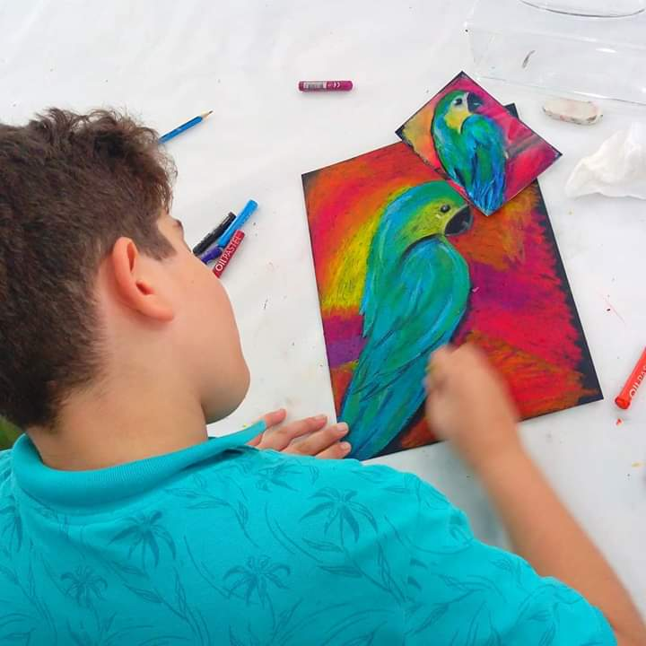

ကိုယ်နဲ့ အလိုက်ဖက်ဆုံး ဝါသနာကို ဘယ်လို ရှာဖွေကြမလဲ

ကိုယ်ကြိုက်တဲ့ ဝါသနာတစ်ခုခုလုပ်တာက စိတ်ဖိစီးမှုကို သက်သာစေပြီး ဉာဏ်ထက်စေပါတယ်။ ဒါကြောင့် အခုကတည်းက ကိုယ့် ဝါသနာပါရာကို စလုပ်ကြည့်သင့်ပါတယ်။ ကဲ…ဒီတော့ အခု ပြောပြမယ့် နည်းလမ်းတွေနဲ့ ကိုယ့်ဆီမှာ တိမ်မြုပ်နေတဲ့ ဝါသနာတွေကို ရှာကြည့်လိုက်ပါဦး။
အများအားဖြင့် အပျိုဖော်ဝင်ရင် လိုအပ်တဲ့ဟော်မုန်းတွေဟာ ကလေးအသက်အရွယ် ၇ နှစ်နဲ့ ၈ နှစ်လောက်ဆို ခန္ဓာကိုယ်မှာ ထွက်စပြုလာပါပြီ။ ဒီအချိန်မျိုးမှာ ကလေးတွေဟာ ခန့်မှန်းလို့မရနိုင်တဲ့ စိတ်ခံစားမှုတွေ၊ ထိန်းချုပ်လို့ မရနိုင်တဲ့ စိတ်သဘောထားအပြောင်းအလဲတွေ ကြုံတွေ့ရနိုင်ပါတယ်။ ဒါကြောင့် ဒီအခါမှာ စိတ်အပြောင်းအလဲဖြစ်နေတဲ့ ကလေးငယ်ကို ကူညီပေးနိုင်မယ့် နည်းလမ်းလေးတွေကို မိဘတို့အတွက် ဗဟုသုတရဖွယ်ရာ ဖော်ပြပေးလိုက်ပါတယ်။
(၁) အချိန်ပေးပါ
ဒါက အချိန်ဖြုန်းတာ မဟုတ်ပါဘူးနော်။ အထူးသဖြင့် မွန်းကြပ်နေတဲ့အချိန် စိတ်ရှုပ်နေတဲ့အချိန်မှာဆို ပိုလို့တောင် အချိန်ပေးသင့်ပါတယ်။ ကိုယ်ကြိုက်တာကို စိတ်ရောကိုယ်ပါနှစ်ပြီး လုပ်နေတဲ့အချိန်က ဦးနှောက် အနားရတဲ့အချိန်ပါပဲ။ ပြီးတော့ စိတ်ခွန်အားကိုလည်းတိုးစေပါတယ်။ ဒီလိုအချိန်ကို အကျိုးရှိရှိ သုံးလိုက်ရတဲ့အတွက်လည်း ကိုယ့်ကိုယ်ကို ကျေနပ်နေမှာပါ။ အားလပ်ချိန်မှာ လုပ်နေကြဖြစ်တဲ့ တီဗွီကြည့်တာတွေ၊ အင်တာနက် သုံးတာတွေတောင် ဒီလိုကျေနပ်မှုမျိုး မဖြစ်စေပါဘူး။ ကိုယ်ဝါသနာပါတာကို လုပ်နေတဲ့အချိန်ဟာ လက်ရှိ ဘဝပြဿနာတွေကနေ လွတ်မြောက်သွားချိန်ပါပဲ။ ဒါ့အပြင် ဝါသနာတူသူတွေနဲ့ သူငယ်ချင်းလည်းဖြစ်နိုင်ပါသေးတယ်။
(၂) ကိုယ့်ဝါသနာကို စလုပ်ရမှာ မကြောက်ပါနဲ့
ကိုယ်ဝါသနာပါတာက ဘာမှန်း မသိလို့ စိတ်ဓာတ်မကျပါနဲ့။ တဖြည်းဖြည်းနဲ့ ရှာလို့ရပါတယ်။ အရေးကြီးတာက ဒီဝါသနာကို စလုပ်ဖို့ မကြောက်ပါနဲ့။ သင်အလုပ်မှာတောင် ပရိုဂျက်တစ်ခု စလုပ်မယ် လုပ်ငန်းအသစ်တစ်ခု စတော့မယ်ဆိုရင် အစွမ်းကုန်ကြိုးစားသေးတာပဲ မဟုတ်လား။ ရိုးရိုးတန်းတန်း ဖိနပ်အသစ်ဝယ်တာတောင် တော်၊ မ တော် အစမ်းစီးကြည့်သေးတာပဲလေ။ ဒီလိုပဲ ဝါသနာဆိုတာလည်း ကိုယ်နဲ့ ကိုက်၊ မကိုက် စမ်းကြည့်လို့ရပါတယ်။ ဒါကြောင့် စလုပ်ဖို့ မကြောက်ပါနဲ့။
(၃) အတိတ်ကနေ စိတ်ခွန်အားယူပါ
ဘယ်ကနေ ဘာကိုစလုပ်ရမှန်း မသိဘူးဆိုရင်လည်း အတိတ်က ဖြစ်ရပ်တွေကို ပြန်စဉ်းစားကြည့်ပါ။ ကလေးဘဝတုန်းက ဘာကိုလုပ်ရတာ ကြိုက်ခဲ့သလဲ။ စန္ဒရားတီးတာ၊ ပုံဆွဲတာ၊ ပန်းပုရုပ်ထုတာ၊ စက်ဘီးစီးတာ စသဖြင့်ပေါ့။ ဒါမှမဟုတ် ငယ်ငယ်တုန်းက အဘွား သိုးမွေးထိုးတာ၊ အဘိုး ဟင်းချက်တာကို သဘောကျဖူးလား။ အားလပ်ရက်ရရင် တောင်တက်သွားလိုက်မယ်လို့ရော စိတ်ကူးယဉ်ဖူးလား။
ဒီလို အတိတ်ကို ပြန်စဉ်းစားကြည့်တာက ကိုယ်မသိလိုက်တဲ့ ဝါသနာ တစ်ခုခုကို ပြန်သတိရစေပါတယ်။ ဒါတွေကို ခုချိန်မှာ အကောင်အထည်ဖော်သင့်ပြီလေ။
(၄) သူများတွေရဲ့ ဝါသနာကိုလည်း မေးမြန်းကြည့်ပါ
သင့် သူငယ်ချင်းတွေ၊ ကျောင်းနေဖက်တွေ၊ အိမ်နီးချင်းတွေ ဘာ ဝါသနာပါလဲ မေးကြည့်ပါ။ သင်နဲ့ ဝါသနာတူတဲ့သူ ရှိရင် သူတို့ဆီက အကြံဉာဏ် တောင်းနိုင်ပါတယ်။ မရှိလည်း စိတ်မပူပါနဲ့။ ကိုယ့်ဟာကိုယ် အင်တာနက်က ရှာပြီး စလုပ်လို့ရပါတယ်။
(၅) နေ့စဉ် ဘဝထဲက ဝါသနာ ပါရာကို ရှာကြည့်ပါ
ကိုယ် ဘာလုပ်ရတာ ပျော်လဲဆိုတာကို သတိထားကြည့်ပါ။ စာဖတ်ရတာ၊ အစားအစာအသစ်တွေ မြည်းစမ်းရတာ၊ သူငယ်ချင်းတွေနဲ့ ဖုန်းပြောရတာ ဒါတွေလည်း ဖြစ်နိုင်ပါတယ်။ ကိုယ့်ဟာကို သတိ မထားမိရင်လည်း သူငယ်ချင်းတွေကို သတိထားမိလား မေးကြည့်ပါ။ စာဖတ်တယ်ပဲ ဆိုကြပါစို့။ ဒါဆိုရင် ရိုးရိုးတန်းတန်း စာဖတ်တာကနေ စာကြည့်တိုက်မှာ လုပ်အားပေးတာအထိ လုပ်လို့ရပါတယ်။
(၆) စျေးဝယ်ထွက်ရာကနေ ဝါသနာကို ရှာကြည့်ပါ
တိုလီမိုလီ ရောင်းတဲ့ဆိုင်လေးတွေကို သွားကြည့်ပါ။ တကယ်လို့ လက်ထဲမှာ ပိုက်ဆံနည်းနည်းပဲ ကျန်တော့မယ်ဆိုရင် ဘာကို ဦးစားပေးဝယ်မလဲ။ သင်ဝယ်လိုက်တဲ့အရာကနေပြီး သင့်ဝါသနာကို ရှာဖွေကြည့်လို့ ရပါတယ်။
(၇) သင်တန်း တစ်ခုခု တက်ကြည့်ပါ
တစ်ခုခုကို ဝါသနာပါတယ်လို့ထင်ရင် အဲဒါနဲ့ပတ်သတ်တဲ့ သင်တန်းတစ်ခုခု တက်ကြည့်ပါ။ တစ်ပတ်မှာ တ ချိန်လောက်ပဲ တက်ရပြီး သိပ်စျေးမကြီးတဲ့ဟာမျိုးပေါ့။ ဥပမာ သိုးနွေးထိုးနည်းသင်တန်း၊ ပန်းပုထုနည်း၊ ပန်းချီဆွဲနည်း၊ ဟင်းချက်နည်းလိုမျိုးတွေပါ။
(၈) သူငယ်ချင်းနဲ့ ဝါသနာအသစ် တစ်ခု စမ်းလုပ်ကြည့်ပါ
အသစ်အဆန်း တစ်ခုခုလုပ်တော့မယ်ဆိုရင် ကိုယ်နဲ့ ရင်းနှီးသူနဲ့ လုပ်တာက ပိုကောင်းပါတယ်။ နှစ်ယောက်လုံးတစ်ခါမှ မလုပ်ဖူးတဲ့အရာဆိုရင် ပိုကောင်းပါတယ်။ သူလုပ်ဖူးတယ် ဆိုရင်လည်း ကိုယ့်ကို ကူညီနိုင်တော့ ကောင်းတာပေါ့။
(၉) လုပ်နေကျ မဟုတ်တဲ့ တခြားဝါသနာတစ်ခုခု ပြောင်းလုပ်ကြည့်ပါ
စိတ်ထဲမှာ တစ်ခုခု စဉ်းစားထားပြီးသား ရှိတယ်ဆိုရင် သေချာ အစီအစဉ် ဆွဲပြီး စလုပ်ကြည့်ပါ။ တစ်ခါမှ မတက်ဘူးတဲ့ သင်တန်းတစ်ခုခုကို တက်ကြည့်တာဖြစ်ဖြစ်၊ တစ်ခါမှ မလုပ်ဖူးတဲ့ အလုပ်ကိုဖြစ်ဖြစ် တစ်ရက်လောက် အချိန်ပေးပြီး လုပ်ကြည့်ပါ။ လုပ်ကြည့်လို့ အဆင်ပြေသွားတဲ့အခါ သူများတွေကို ပြောပြပါ။ သူတို့ စိတ်ဝင်တစားနားထောင်တာဖြစ်ဖြစ် သင့်ကို ချီးကျူးတာဖြစ်ဖြစ် နောက်ဆုံး သူတို့ပါ သင်နဲ့အတူ လိုက်လုပ်လာပြီဆိုရင် ပျော်စရာပဲပေါ့။
(၁၀) ရှုံးနိမ့်မှာကို မကြောက်ပါနဲ့ပါ
ကိုယ် ဝါသနာပါတာကို စလုပ်လိုက်ပြီဆိုတာနဲ့ တစ်ဝက်အောင်မြင်နေပါပြီ။ စဖို့တောင် မစဉ်းစားဘူးဆိုရင် ရှုံးနိမ့်တော့မှာပေါ့။ သင် လုပ်ခဲ့ထားတွေ အဆင်သင့် မဖြစ်သေးဘူးဆိုရင် သူများကို မပြလို့လည်း ရပါတယ်။ ဒါပေမဲ့ ကိုယ်လုပ်ထားတာလေးတွေက အကောင်းကြီး မဟုတ်ဘူးဆိုရင်တောင် ကိုယ့်အတွက်တော့ နှစ်သက်စရာပါပဲ။
ကဲ…. ဒီနည်းလမ်းတွေနဲ့သာဆို ကိုယ် တကယ် ဘာကို ၀ါသနာ ပါလဲဆိုတာ အမြန်ဆုံး ရှာတွေ့တော့မယ်လို့ မျှော်လင့်လိုက်ရပါတယ်နော်။
Source-ဒေါက်တာထက်ထက်ဇော်ဝင်း